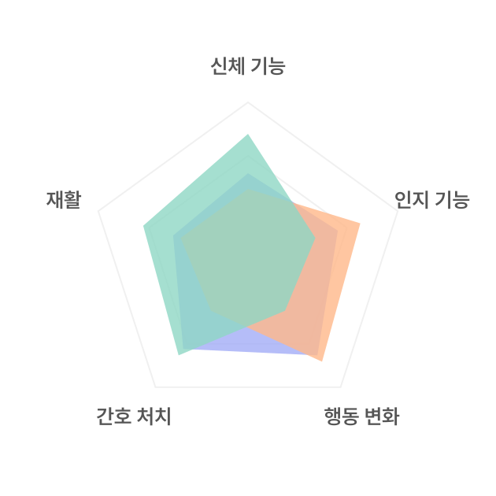
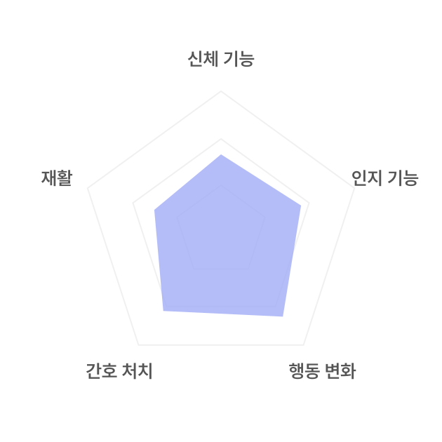
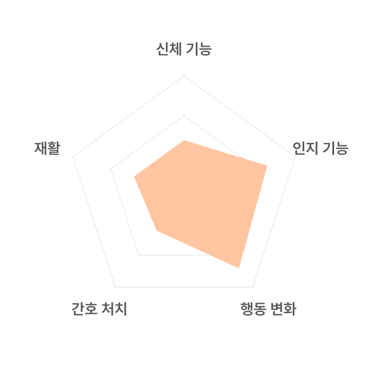
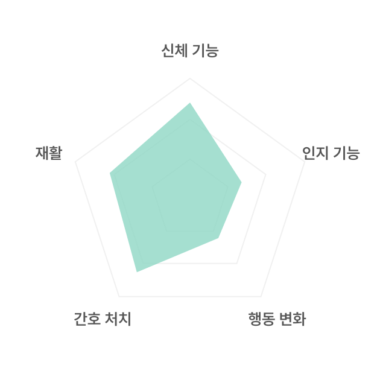

좋아요, 댓글, 알림 설정 꼭!
요양 간병 이야기방
81세 / 여성
67세 / 남성
91세 / 남성

전체 보기

행동 변화와 기능이 떨어져 간호 처치가 필요한 상태로, 여러 프로그램 활동으로 행동 변화를 나아지게 할 도움이 필요합니다.
주야간
(비급여 포함) 143,860 원

인지와 행동 변화 기능이 떨어져, 여러 프로그램 활동으로 인지와 행동 변화를 나아지게 할 도움이 필요합니다.
(비급여 포함) 80,000 원

몸의 기능이 떨어져 간호 처치가 필요한 상태로, 간호 처치를 할 수 있는 분의 꾸준한 관리와 일상생활 돌봄이 필요합니다.
방문요양
방문간호
(비급여 포함) 0 원

 서비스장기 요양 서비스 사례
서비스장기 요양 서비스 사례